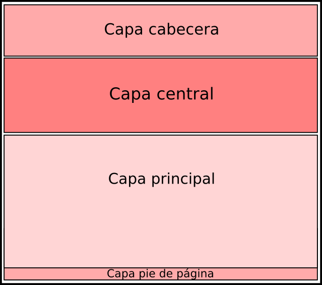
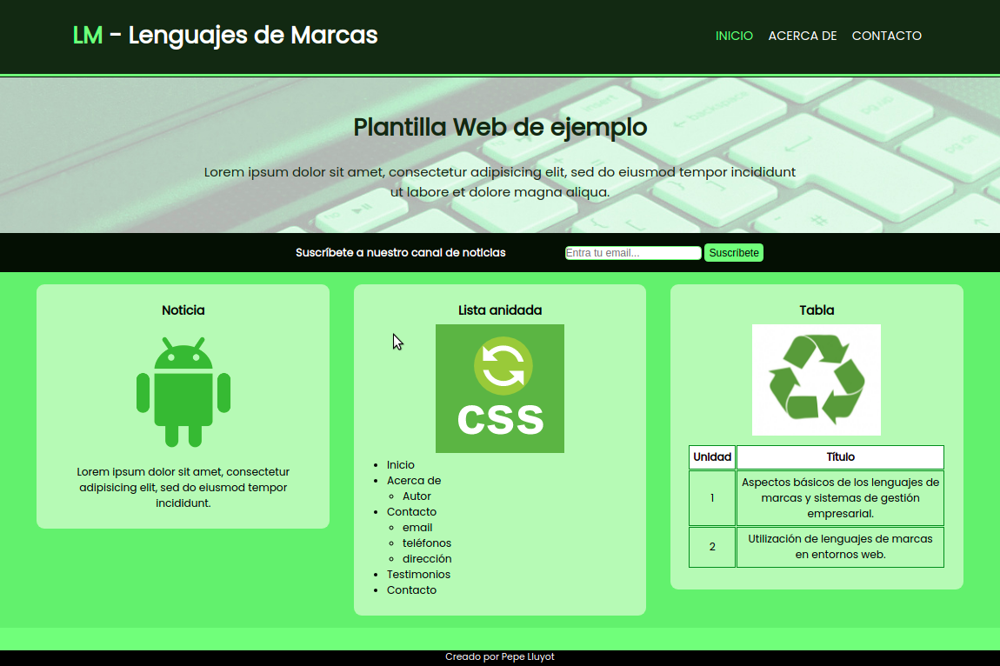

1.- Descripción de la tarea
Caso práctico

Antonio, Pedro y Juan quieren pertenecer a nuestra empresa y trabajar como desarrolladores web. Se reunen con Ada para poner a prueba sus conocimientos y reciben un encargo de parte del equipo de selección de personal.
Deben desarrollar una web con HTML5 haciendo uso de CSS simple, de forma que cumplan una serie de requisitos básicos, y en los que podrán demostrar sus conocimientos en el desarrollo de páginas webs.
Manos a la obra !!!
¿Qué te pedimos que hagas?
En esta Tarea queremos que elabores una web con una hoja de estilos asociada. La estructura de la página es como se muestra en la siguiente imagen:

Para resolver correctamente la tarea, debes cumplir los siguientes requisitos:
- Las páginas se desarrollarán con HTML5.
- Debe tener una estructura claramente definida: capa cabecera (header), capa central, capa principal (main), capa pie de página (footer)
- Capa cabecera:
- contendrá el título "LM-Lenguajes de Marcas"
- y un menú con tres enlaces (inicio, acerca de y contacto).Todos los enlaces tendrán el mismo tamaño. El color de fondo que deberá cambiar mediante CSS al poner el ratón sobre dicho enlace.
- Capa central:
- Contendrá una capa donde se mostrará el título de la web y una breve descripción. Deberá contener una imagen de fondo que ocupe todo el ancho de la ventana.
- Una capa que contenga un pequeño formulario de búsqueda (un cuadro de texto y un botón) y un párrafo.
- Capa principal:
- Un espacio donde se incluirán tres artículos (article):
- Cada artículo estará compuesto de un título, una imagen y un contenido.
- El primer artículo contendrá un párrafo centrado.
- El segundo una lista desordenada a dos niveles.
- El tercer artículo una tabla con al menos dos filas y dos columnas. La tabla debe tener una cabecera.
- Los tres artículos tendrán las mismas proporciones y guardarán un espacio proporcional entre ellos. Se mostrarán centrados en la página.
- Cada artículo estará compuesto de un título, una imagen y un contenido.
- Un espacio donde se incluirán tres artículos (article):
- Capa pie de página:
- Contendrá tu nombre y apellidos, centrado. Esta capa estará siempre visible (fija) en la parte inferior de la página (aunque hagas scroll).
- Capa cabecera:
- Las capas que forman la estructura deberán ocupar la totalidad del ancho de la página, tener un color de fondo diferenciado. El contenido estará correctamente alineado, y guardará un margen y un espaciado considerable para conseguir un aspecto visual agradable.
- Hoja de estilos CSS:
- Contendrá una hoja de estilos externa donde se definirá el aspecto visual de las páginas. (No usar propiedades de estilos dentro del propio documento HTML):
- Deberá ser única para la página y además especificarse claramente los estilos empleados, eliminando el código repetitivo o no usado.
- La hoja de estilos será de elaboración propia, y contendrá los comentarios oportunos para clarificar el código.
- Tanto el código de las páginas como el de la hoja de estilos ha de ser validado por W3C.
- Es importante que nuestro código sea legible, ordenado y esté bien explicado mediante comentarios.
- Comprobar que la página generada se puede visualizar correctamente en diferentes navegadores.
- No utilizar librerías JavaScript como jquery, bootstrap, etc..
A modo de ejemplo se muestra una web con todos los requisitos de la tarea:

Aclaración: No realizar la tarea en HTML 4.01 ni XHTML. Utilizar los elementos aportados por HTML 5.0 para estructurar las páginas web: header, main, footer, nav, section, article. También se puede utilizar elementos div y span para subbloques dentro de estos principales